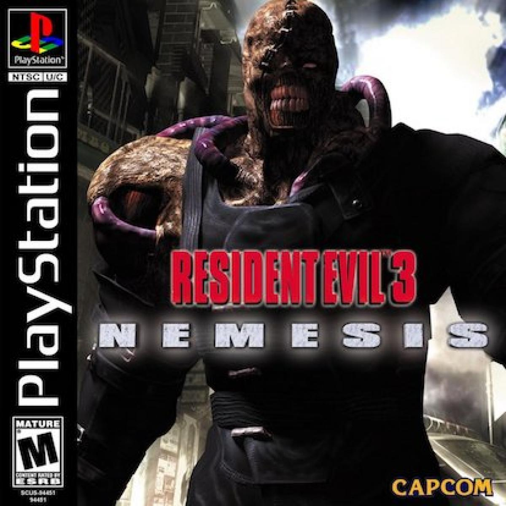
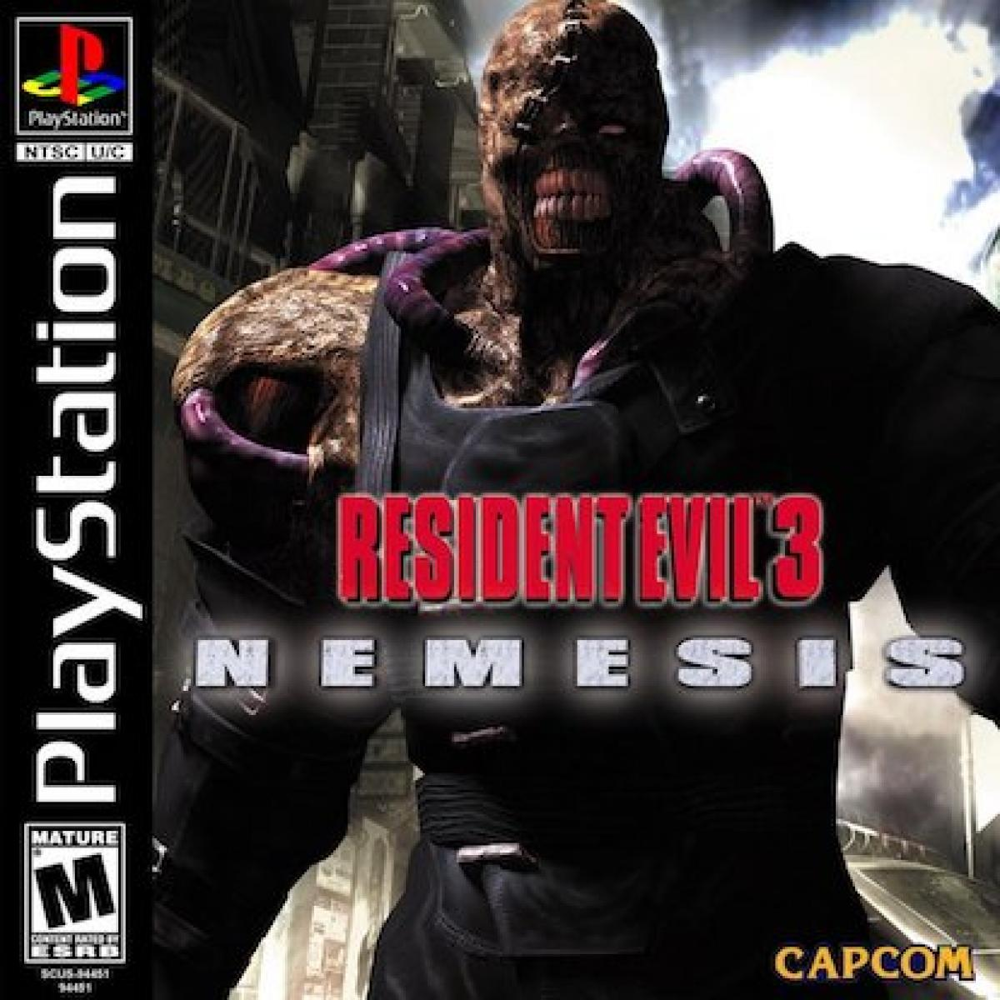
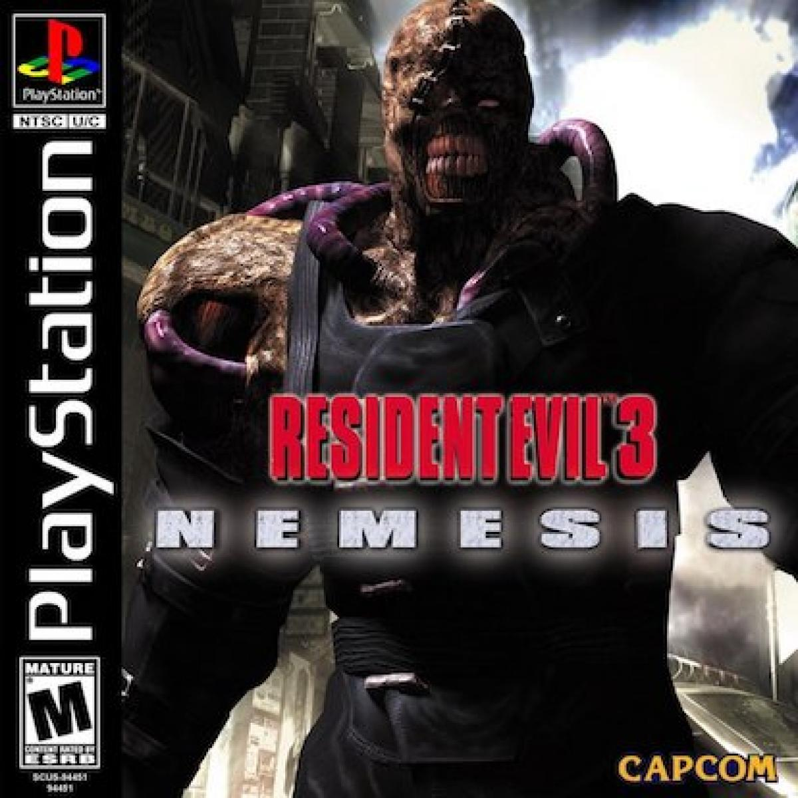
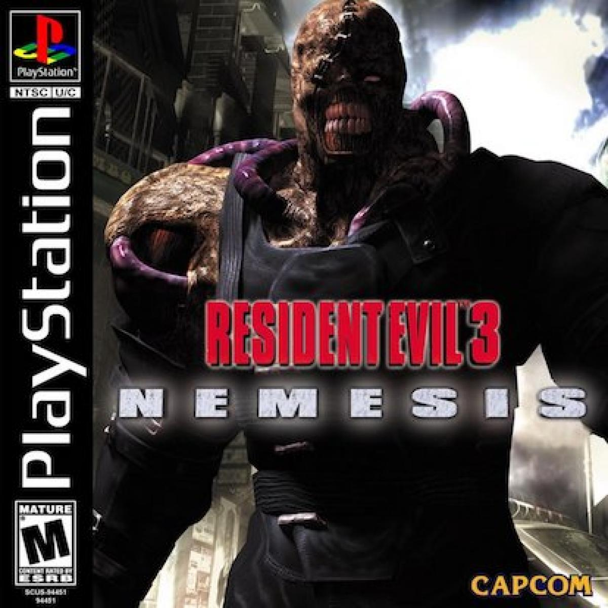

Saga de Resident Evil


 



 

La trama del juego comienza con la llegada de Rebecca Chambers a un misterioso Tren estacionado en las vías, en el medio de un bosque. Ahí ella se encontrará con muertos vivientes morando por los vagones, y, cuando se vio acorralada, se encontró con un misterioso fugitivo, el cual iba a ser sentenciado a muerte, Billy Coen.
La trama del juego comienza con la llegada de Chris, Jill y Wesker a una mansión situada en el bosque. Ahí ellos se encontrarán con muertos vivientes morando por los pasillos y las habitaciones. En ese lugar, ellos intentarán escapar sin ser devorados por los perros que se encuentran en el exterior. Pronto, son testigos de los experimentos realizados por la empresa más importante de la ciudad, y de una lista de traiciones que llega hasta el propio cuerpo de S.T.A.R.S.
La trama del juego comienza con la llegada de Claire y Leon a la ciudad, allí ellos tienen intención de dirigirse a la estación de policía (Claire en búsqueda de su hermano, Leon para unirse a la policía). En el camino, ellos se ven forzados a separarse para re encontrarse en la comisaría. Allí ellos al no encontrar a prácticamente nadie con vida, se verán forzados a escapar de la ciudad.Durante dicho escape, ellos conocerán las atrocidades creadas por Umbrella y sus científicos, y se verán cara a cara con una de las creaciones más horribles conocidas por el hombre.
La trama del juego está dividida en dos partes. La primera comienza el 28 de septiembre y marca el inicio del escape de Jill de la ciudad, tras que esta es destruida por el brote viral, sucesos que ocurren un día antes de lo narrado en Resident Evil 2. La segunda parte comienza el 1 de octubre, Jill acaba de despertar de un coma inducido por la infección con el virus-T y concluye con el escape de esta de la ciudad en un helicóptero pilotado por Barry Burton..
Seis años después de estos acontecimientos, Leon S. Kennedy, es enviado a España en una misión para rescatar a Ashley Graham, la hija del presidente, que ha sido secuestrada por una misteriosa organización de culto. El fue elegido, dado que, fue uno de los pocos sobrevivientes de los acontecimientos ocurridos en Raccoon City, además, él fue reclutado y entrenado por el gobierno de los Estados Unidos para convertirse en un agente especial, después de que se enteraron de sus acciones en Raccoon City.
Los sucesos narrados en la historia del juego comienzan en el año 2009, seis años después de la destrucción de la Corporación farmacéutica Umbrella, y 11 años después del Incidente de Destrucción de Raccoon City. Chris Redfield es enviado por la B.S.A.A. a investigar un posible contrabando de armas bio orgánicas en África.
El juego comienza en un flashback de Leon Scott Kennedy donde hace una visita al presidente esto en el año 2013. Han pasado quince años desde los acontecimientos en Raccoon City y el presidente de los Estados Unidos, amigo personal de Leon está decidido en contar toda la verdad sobre esos hechos. Sin embargo, un ataque bioterrorista evita la comparecencia y transforma al presidente en un ser deforme, obligando a Leon a tomar una difícil decisión, junto a una nueva misteriosa compañera llamada Helena Harper.
Ethan Winters es atraído a una plantación abandonada, en los alrededores de la ciudad de Dulvey en Luisiana, por un extraño mensaje de su esposa Mia, a la que creía muerta, dado que había estado desaparecida durante tres años.
Ethan ha estado viviendo con su esposa Mia y su hija recién nacida Rose. Gracias al agente de la "BSAA" Chris Redfield, Mia fue perdonada por su pasado terrorista en Las Conexiones, con la condición de que ella y su familia estarían permanentemente vigilados. Cuando Chris Redfield y sus hombres aparecen repentinamente, asesinan a Mia a sangre fría, y secuestran a Ethan y a la pequeña Rose.